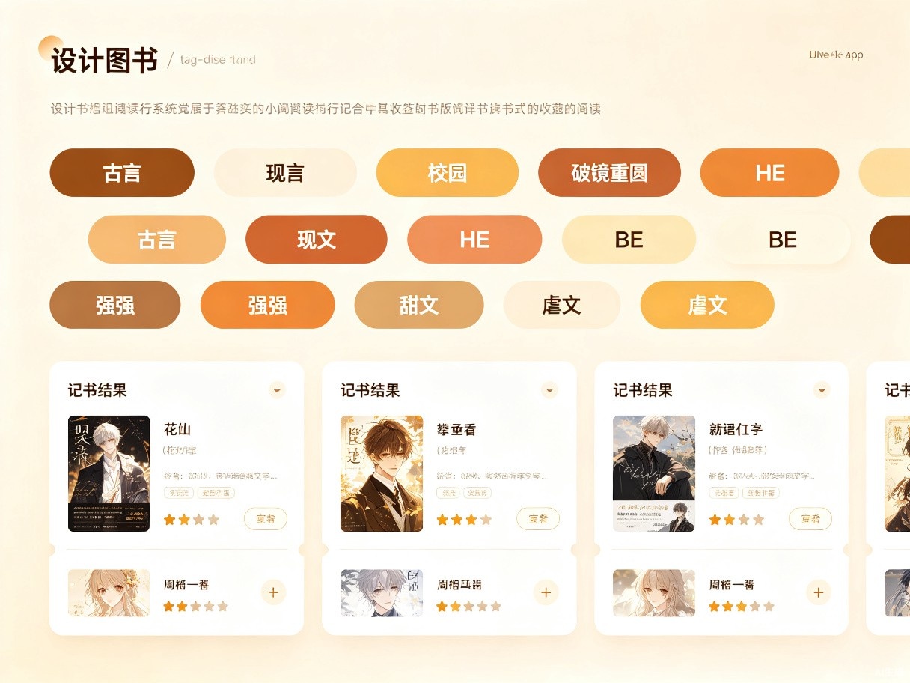
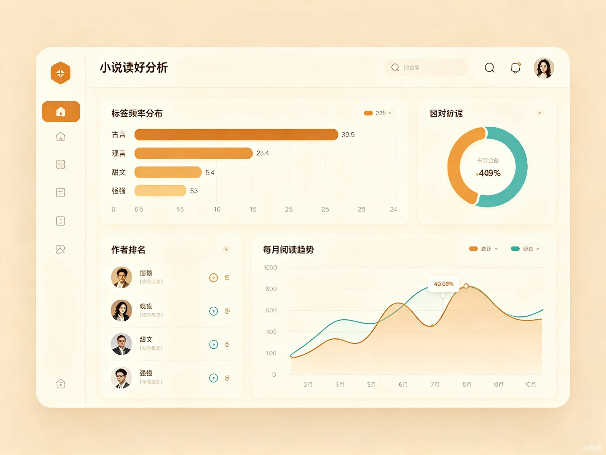
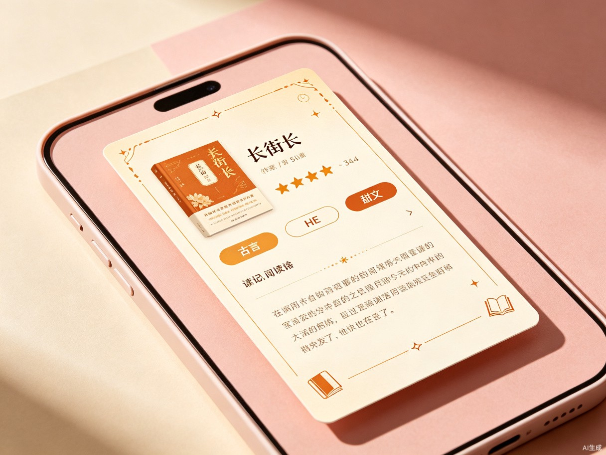

创意名称与介绍
书页留痕 · ReadMark 是一款轻量级 Web 应用，专注于小说读者的读后沉淀。 帮你记录每一本读过的书的感想、打上自己的标签、分析阅读偏好，还能一键生成精美分享卡片发到小红书， 与同好互动获取更多好书推荐。
想解决什么问题
读者看完一本小说后想写感想、打标签做整理，但缺乏一个专注于读后沉淀的工具。 同时，想把阅读心得分享到小红书获取同好推荐，但制作分享卡片费时费力，导致很多好内容没能发出去。
为什么会想到做这个
自己看完一本好书后常常有很多感触，想记下来、打上标签。发到小红书后，经常有口味相近的人帮我推荐类似的文，形成了一个 「记录 → 分享 → 获得推荐 → 发现新书 → 再记录」的良性循环。 但目前从记录到制作分享卡片的过程太碎片化，非常低效。
产品形态
轻量级 Web 应用（响应式设计，PC 和移动端均可使用），核心是 读后记录卡片 + 标签体系 + 偏好洞察 + 一键生成分享卡片。
目标用户及痛点
面向哪些用户
- 有读后总结习惯的小说爱好者（看完会想写两句感想的人）
- 在小红书等平台分享阅读心得的社交型读者
- 想通过同好推荐发现新书的读者
在什么场景下使用
📖 刚看完一本小说，想记录感想、打标签、留档
🔍 想找「之前读过的那种校园甜文」，通过标签筛选历史记录
🎨 想把读后感快速做成精美卡片发到小红书，看看同好们有什么推荐
📊 年终回顾时，看看自己今年读得最多的是什么类型、哪些作者出现频率最高
当前痛点
| 痛点 | 具体表现 |
|---|---|
| 读后无沉淀 | 看完就忘，感想零散散落在备忘录、微博、豆瓣各处，无法统一管理 |
| 标签缺失 | 无法按自己的标签体系给书分类，想找某类文时只能靠模糊记忆 |
| 偏好盲区 | 不清楚自己的阅读口味倾向，不知道自己偏好什么题材、什么作者 |
| 分享门槛高 | 想发小红书但做卡片太麻烦，要在多个工具间来回切换，很多好内容搁置 |
| 推荐断裂 | 同好的推荐散落在评论区，没有回流到自己的阅读记录中，形成信息孤岛 |
核心功能
读后记录卡片
看完一本书后创建记录：书名、作者、评分（星级）、自由文字感想、阅读日期。每一本书都有一张完整的读后档案。
自定义标签体系
给每条记录打标签（如「古言」「破镜重圆」「强强」「HE」等），标签可自由创建，支持多标签，完全按你的口味来。
标签筛选与检索
通过标签组合筛选历史记录（如同时选「古言 + HE」），快速找到符合条件的已读书目。再也不靠模糊记忆找文。
阅读偏好分析
标签频率分布（你最常读什么类型）、作者出现频率排行（你最爱的作者）、偏好趋势变化。用数据看见自己的阅读口味。
一键生成分享卡片
基于读后记录自动生成精美图片卡片（适配小红书竖版 3:4 比例），包含书名、评分、标签、精华感想。提供多种风格模板，一键下载即可发布。从记录到分享，零门槛。
核心闭环
形成「记录 → 分享 → 推荐 → 发现 → 再记录」的良性阅读闭环
产品界面示意
以下为产品核心功能的界面概念设计，展示读后记录、标签筛选、偏好分析和分享卡片的预期使用体验。



价值与意义
效率提升
标签体系让「找文」效率大幅提升，不再依赖模糊记忆。一键生成分享卡片省去繁琐的图片制作流程，从记录到发布一气呵成。
社交价值
降低分享门槛，帮助读者连接同好。从社交互动中持续获取优质的书单推荐，形成「发现 → 阅读 → 分享 → 再发现」的正向循环，让阅读不再孤单。
“每一本书都值得被记住，每一种口味都值得被发现。”